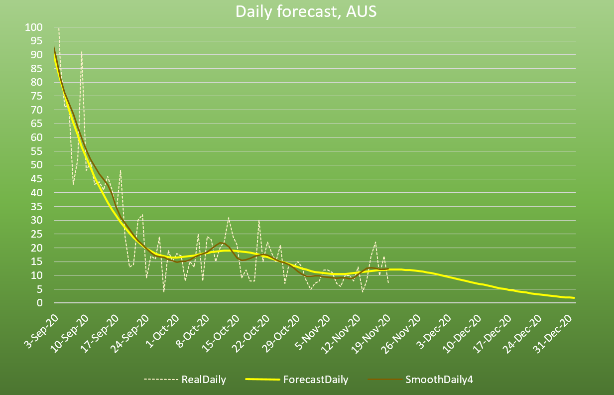
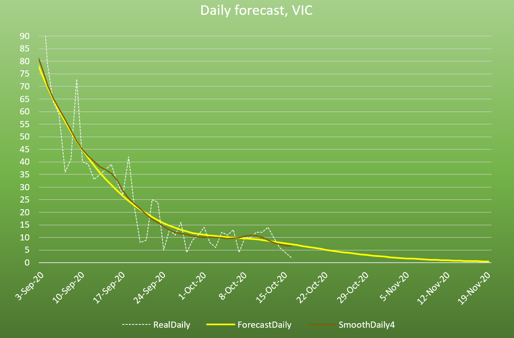
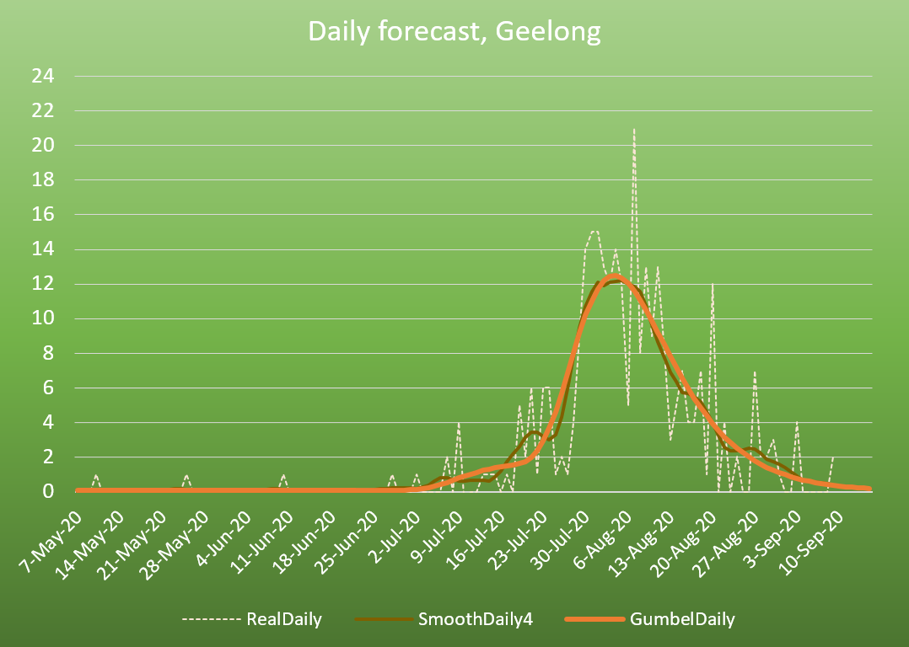
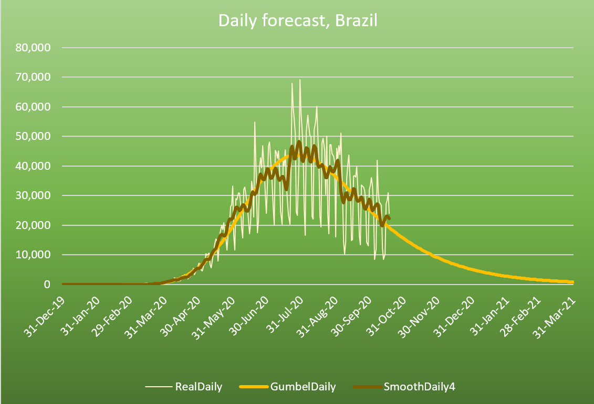
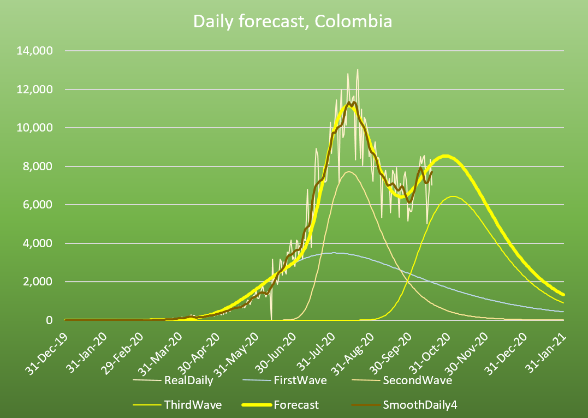
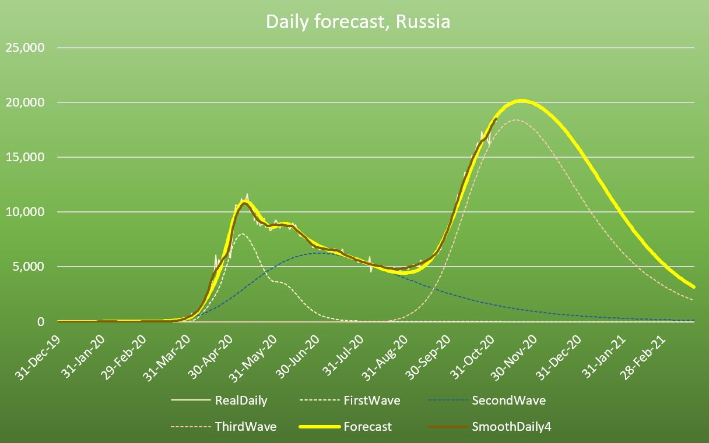
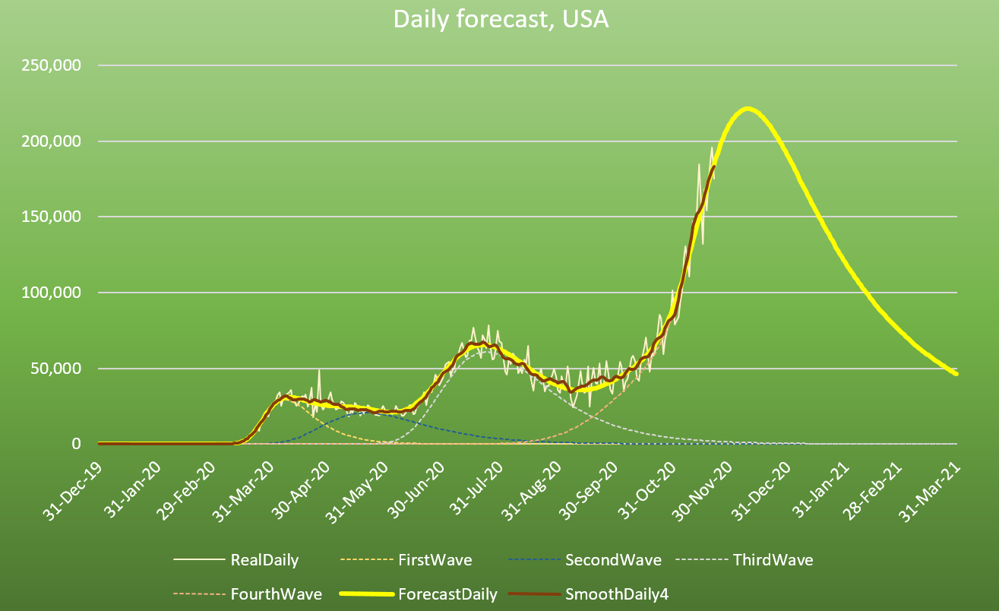
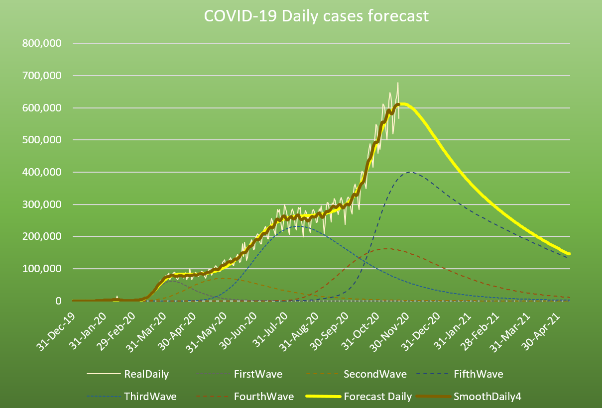

[Credit: Medical Xpress]
|
Locations |
Research Projects |
* * * * * * * * * * * * * * * * * * * * * * * * * * * * * * * * * * * * * * * * * * * * * * * * * * * *
The world
is in
a pandemic, and some regions are in the state of crisis or emergency
with enforced lockdown and curfew. This page was created to respond to
the situtation.
The
research program has two broad
aims:
» To help elimiate the pandemic altogether through modeling and AI.
As of
August
2020, Australia is experiencing the second wave, mostly in the state of
Victoria. But with strict social measures, the situtation is improving
rapidly.

Australia is on the good track of battling the second wave.

Victoria is the main state in the current battle.

Geelong is a regional area and it is doing extremely well.
The data
for
Brazil looks unusual, there must be something going on with the reporting
system. There seem to be two waves combined. Given the high uncertainty on the data, we can only make an
educated guess work.

Brazil will be in top 3.
COVID-19
in Colombia is on the rise, hence there is much uncertainty on the peak
and its timing. Given the high uncertainty on the data, we can only
make an
educated guess work.

COVID-19 may hit Colombia hard.
India has
experienced at least two waves eventhough we cannot see it from the
curve. The good news is it is reaching the peak.

India will be in top 3.
Russia has
been hit hard. Without vaccine, the trend does not look good. However,
with the latest Sputnik-V vaccine, the situation may be dramatically
improved in the next few months.

Russia is on steady downward trend until the Sputnik-V vaccine has the full effect.
The US has
been
a dramatic case with multiple waves. The current wave is going down
rapidly, but we never know what comes next given how the country
has responded.

USA is trying
to chop the tail of the curve.
Vietnam
did extremely well on the first wave with zero dealth, and is currently
experiencing the second wave with 2-3% of dealth rate. But it is doing
fine.

Despite a small number of reported cases, the trend has been quite predictable.
The world
as the
sum of all its parts, is complex to model because of multiple waves
coming from various regions at different times, some are tiny and hard
to detect given only the curve. The hope is clearly on the
worldwide vaccination, which might be possible by the first quarter of
2021.

Research Projects:
This project aims to build accurate forecasting models for each region in the world.
The
current methodology is a mixed bag of simulation, differential
equations, and data-driven curve fitting under the Generalized Additive
Model (GAM) with sparisity constraint. It was initially inspired by the work by Dr Nguyen LeAnh.
This project aims to find existing drugs that may be effective in treating patients with COVID-19.
The current methodology is based on predicting binding between drugs and proteins known to be active.
·
Mobility estimation using Twitter
This
project
aims to estimate the community's mobility and its effect on the infection rate of each region
The current methodology is based on measuring Twitter activity in each region.
Preprints